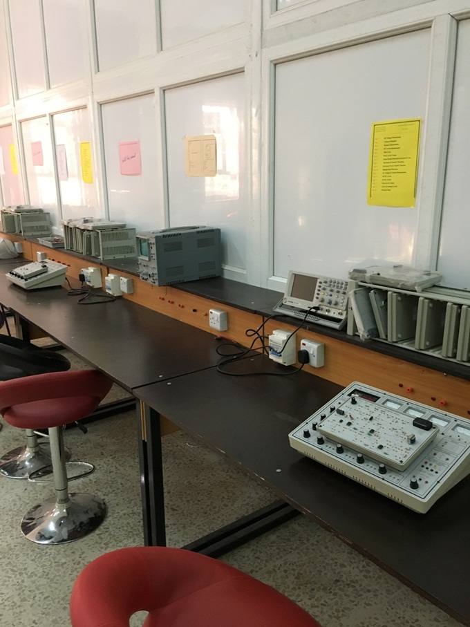
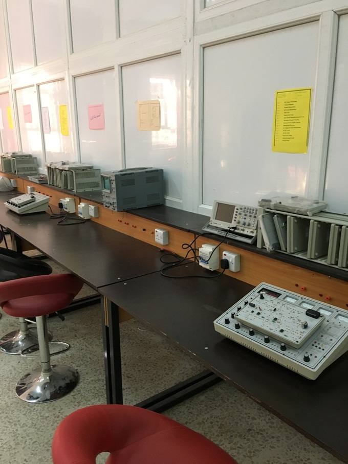
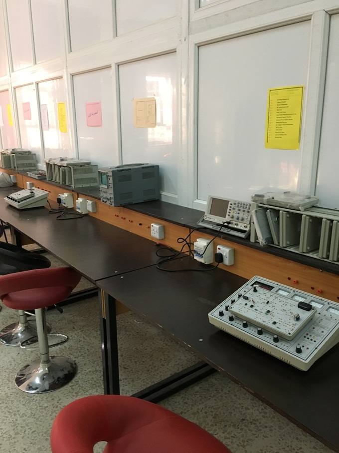
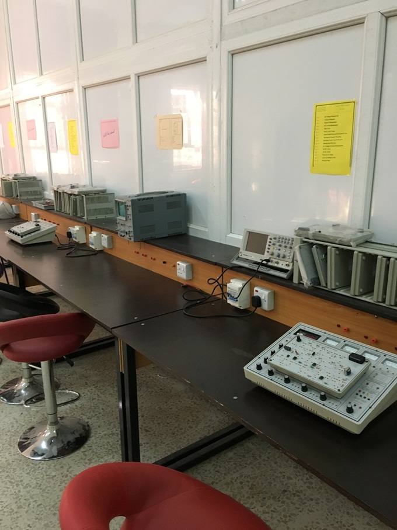

How to store a collection of objects in memory, what operations we can perform on that data, the algorithms for those operations. How do we organize information in computer memory so that we can find, update, add, and delete portions of it efficiently.

Programming in C++ laboratory is the basis and most important for the student in first stage. In C++ laboratory, students are writing and performing various of programs by using CodeBlocks IDE, which is considers specialist IDE for writing programs in c and C++

Visual Basic is a great programming language; it is able to create very advanced programs. One of the best ways to get ideas for your programs and also learn how to develop them is by learning how other full applications are created. Most business applications interface with databases to store and retrieve information
يعتبر هذا المختبر من المختبرات الرئيسية و المهمة بالنسبة لطلبة المرحلة الاولى , تجرى تجارب هذا المختبر في الفصل الدراسي الاول والثاني ,منهاج المختبر يتكون من عشرة تجارب لكل فصل دراسي وقد أخذ بنظر الاعتبار تسلسل التجارب بما يلائم مع المادة النظرية التي يأخذها الطالب من حيث التسلسل المعلومات المعطاة لهُ لتكون مطابقة لمفردات منهج مادة أسس الهندسة الكهربائية